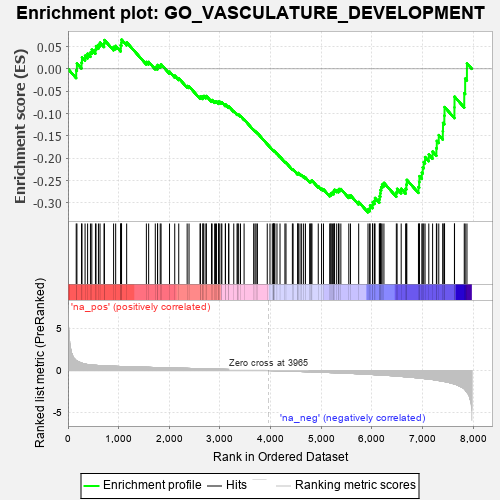
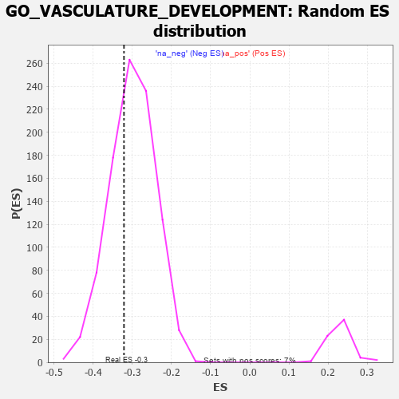

| | | Dataset | 7d |
| Phenotype | NoPhenotypeAvailable |
| Upregulated in class | na_neg |
| GeneSet | GO_VASCULATURE_DEVELOPMENT |
| Enrichment Score (ES) | -0.3213099 |
| Normalized Enrichment Score (NES) | -1.0699891 |
| Nominal p-value | 0.34405145 |
| FDR q-value | 0.7904093 |
| FWER p-Value | 1.0 |
Table: GSEA Results Summary

Fig 1: Enrichment plot: GO_VASCULATURE_DEVELOPMENT
Profile of the Running ES Score & Positions of GeneSet Members on the Rank Ordered List
| PROBE | GENE SYMBOL | GENE_TITLE | RANK IN GENE LIST | RANK METRIC SCORE | RUNNING ES | CORE ENRICHMENT | | 1 | SPI1 | | | 162 | 1.182 | -0.0031 | No |
| 2 | FOXF1 | | | 176 | 1.136 | 0.0122 | No |
| 3 | TBX20 | | | 267 | 0.880 | 0.0139 | No |
| 4 | HGF | | | 276 | 0.870 | 0.0259 | No |
| 5 | DLL1 | | | 337 | 0.760 | 0.0295 | No |
| 6 | BAX | | | 387 | 0.711 | 0.0339 | No |
| 7 | SUFU | | | 443 | 0.665 | 0.0368 | No |
| 8 | LRP1 | | | 470 | 0.648 | 0.0431 | No |
| 9 | SRF | | | 542 | 0.615 | 0.0432 | No |
| 10 | JMJD6 | | | 553 | 0.613 | 0.0511 | No |
| 11 | FBXW8 | | | 601 | 0.594 | 0.0540 | No |
| 12 | GLMN | | | 632 | 0.583 | 0.0588 | No |
| 13 | VASH1 | | | 712 | 0.556 | 0.0570 | No |
| 14 | ID1 | | | 719 | 0.555 | 0.0646 | No |
| 15 | HDAC5 | | | 900 | 0.506 | 0.0491 | No |
| 16 | PDCD4 | | | 941 | 0.497 | 0.0514 | No |
| 17 | AKT1 | | | 1040 | 0.476 | 0.0460 | No |
| 18 | YAP1 | | | 1041 | 0.475 | 0.0531 | No |
| 19 | MEF2C | | | 1054 | 0.473 | 0.0586 | No |
| 20 | RBM15 | | | 1057 | 0.473 | 0.0654 | No |
| 21 | GAB1 | | | 1158 | 0.453 | 0.0594 | No |
| 22 | SOS1 | | | 1547 | 0.384 | 0.0156 | No |
| 23 | NPRL3 | | | 1592 | 0.375 | 0.0155 | No |
| 24 | MEIS1 | | | 1723 | 0.351 | 0.0042 | No |
| 25 | AGO2 | | | 1767 | 0.343 | 0.0038 | No |
| 26 | LRP5 | | | 1769 | 0.342 | 0.0088 | No |
| 27 | SGPL1 | | | 1820 | 0.334 | 0.0074 | No |
| 28 | GATA4 | | | 1837 | 0.330 | 0.0102 | No |
| 29 | FOXO4 | | | 2004 | 0.304 | -0.0064 | No |
| 30 | BMP7 | | | 2107 | 0.290 | -0.0151 | No |
| 31 | SYK | | | 2186 | 0.278 | -0.0210 | No |
| 32 | BCAS3 | | | 2352 | 0.253 | -0.0383 | No |
| 33 | HIPK2 | | | 2389 | 0.247 | -0.0392 | No |
| 34 | EMC10 | | | 2607 | 0.211 | -0.0638 | No |
| 35 | VAV3 | | | 2614 | 0.210 | -0.0614 | No |
| 36 | EPC1 | | | 2663 | 0.204 | -0.0645 | No |
| 37 | ARID2 | | | 2664 | 0.204 | -0.0614 | No |
| 38 | SASH1 | | | 2682 | 0.201 | -0.0606 | No |
| 39 | SLIT2 | | | 2724 | 0.195 | -0.0629 | No |
| 40 | RORA | | | 2730 | 0.193 | -0.0607 | No |
| 41 | RIC8A | | | 2833 | 0.179 | -0.0711 | No |
| 42 | NR2E1 | | | 2844 | 0.177 | -0.0697 | No |
| 43 | FGFR2 | | | 2895 | 0.167 | -0.0736 | No |
| 44 | AGGF1 | | | 2911 | 0.164 | -0.0731 | No |
| 45 | ACVR1 | | | 2932 | 0.161 | -0.0732 | No |
| 46 | SHB | | | 2974 | 0.154 | -0.0762 | No |
| 47 | RNH1 | | | 2977 | 0.153 | -0.0741 | No |
| 48 | PCSK5 | | | 2983 | 0.152 | -0.0725 | No |
| 49 | WNT4 | | | 3023 | 0.146 | -0.0753 | No |
| 50 | LEF1 | | | 3037 | 0.144 | -0.0748 | No |
| 51 | AIMP1 | | | 3105 | 0.136 | -0.0813 | No |
| 52 | GPX1 | | | 3109 | 0.135 | -0.0797 | No |
| 53 | PAX6 | | | 3170 | 0.127 | -0.0855 | No |
| 54 | AHR | | | 3175 | 0.126 | -0.0841 | No |
| 55 | SNX17 | | | 3272 | 0.110 | -0.0947 | No |
| 56 | SMAD1 | | | 3337 | 0.099 | -0.1014 | No |
| 57 | TAB1 | | | 3351 | 0.097 | -0.1017 | No |
| 58 | SMAD7 | | | 3369 | 0.093 | -0.1024 | No |
| 59 | MED1 | | | 3405 | 0.089 | -0.1056 | No |
| 60 | HGS | | | 3476 | 0.080 | -0.1133 | No |
| 61 | DCTN5 | | | 3665 | 0.049 | -0.1366 | No |
| 62 | EPN2 | | | 3691 | 0.045 | -0.1392 | No |
| 63 | NF1 | | | 3713 | 0.040 | -0.1412 | No |
| 64 | FMNL3 | | | 3739 | 0.036 | -0.1439 | No |
| 65 | CCM2 | | | 3933 | 0.005 | -0.1685 | No |
| 66 | EYA1 | | | 3987 | -0.006 | -0.1752 | No |
| 67 | VEZF1 | | | 4033 | -0.013 | -0.1807 | No |
| 68 | DDAH1 | | | 4056 | -0.016 | -0.1833 | No |
| 69 | TAL1 | | | 4064 | -0.018 | -0.1839 | No |
| 70 | SFRP2 | | | 4065 | -0.018 | -0.1837 | No |
| 71 | ROBO2 | | | 4066 | -0.018 | -0.1834 | No |
| 72 | WNT2 | | | 4084 | -0.021 | -0.1852 | No |
| 73 | ABL1 | | | 4125 | -0.027 | -0.1900 | No |
| 74 | AP2B1 | | | 4185 | -0.039 | -0.1969 | No |
| 75 | WNT11 | | | 4282 | -0.056 | -0.2083 | No |
| 76 | TBX2 | | | 4303 | -0.060 | -0.2100 | No |
| 77 | MYDGF | | | 4429 | -0.081 | -0.2248 | No |
| 78 | SETD2 | | | 4443 | -0.084 | -0.2252 | No |
| 79 | RIN2 | | | 4535 | -0.101 | -0.2353 | No |
| 80 | AAMP | | | 4539 | -0.103 | -0.2341 | No |
| 81 | NTRK2 | | | 4543 | -0.104 | -0.2330 | No |
| 82 | CMA1 | | | 4580 | -0.114 | -0.2359 | No |
| 83 | ADTRP | | | 4612 | -0.120 | -0.2380 | No |
| 84 | MYLK | | | 4651 | -0.128 | -0.2410 | No |
| 85 | PTK7 | | | 4687 | -0.136 | -0.2434 | No |
| 86 | PLCG1 | | | 4770 | -0.151 | -0.2516 | No |
| 87 | SRPK2 | | | 4790 | -0.155 | -0.2517 | No |
| 88 | TERT | | | 4801 | -0.157 | -0.2507 | No |
| 89 | FBXW7 | | | 4816 | -0.161 | -0.2500 | No |
| 90 | FZD4 | | | 4940 | -0.186 | -0.2630 | No |
| 91 | KLF4 | | | 5005 | -0.198 | -0.2682 | No |
| 92 | PDPK1 | | | 5043 | -0.207 | -0.2698 | No |
| 93 | TBX1 | | | 5166 | -0.241 | -0.2818 | No |
| 94 | PARVA | | | 5187 | -0.245 | -0.2807 | No |
| 95 | SMO | | | 5195 | -0.247 | -0.2779 | No |
| 96 | GPR4 | | | 5219 | -0.250 | -0.2772 | No |
| 97 | KRIT1 | | | 5248 | -0.257 | -0.2769 | No |
| 98 | FOXJ2 | | | 5249 | -0.257 | -0.2731 | No |
| 99 | PTEN | | | 5262 | -0.261 | -0.2707 | No |
| 100 | EPN1 | | | 5304 | -0.272 | -0.2719 | No |
| 101 | TCF21 | | | 5340 | -0.283 | -0.2721 | No |
| 102 | EPHA1 | | | 5349 | -0.285 | -0.2689 | No |
| 103 | FZD5 | | | 5386 | -0.292 | -0.2691 | No |
| 104 | FGFR1 | | | 5543 | -0.332 | -0.2841 | No |
| 105 | SPHK1 | | | 5576 | -0.339 | -0.2831 | No |
| 106 | PDCL3 | | | 5738 | -0.388 | -0.2979 | No |
| 107 | STK11 | | | 5922 | -0.443 | -0.3147 | Yes |
| 108 | PRDM1 | | | 5956 | -0.457 | -0.3121 | Yes |
| 109 | B9D1 | | | 5962 | -0.459 | -0.3059 | Yes |
| 110 | XBP1 | | | 6011 | -0.475 | -0.3049 | Yes |
| 111 | PRKX | | | 6016 | -0.477 | -0.2983 | Yes |
| 112 | FZD8 | | | 6051 | -0.490 | -0.2953 | Yes |
| 113 | JAG1 | | | 6060 | -0.494 | -0.2890 | Yes |
| 114 | STK4 | | | 6145 | -0.518 | -0.2920 | Yes |
| 115 | ROCK1 | | | 6152 | -0.520 | -0.2850 | Yes |
| 116 | EGR1 | | | 6165 | -0.527 | -0.2787 | Yes |
| 117 | STIM1 | | | 6169 | -0.528 | -0.2712 | Yes |
| 118 | KLF2 | | | 6182 | -0.532 | -0.2648 | Yes |
| 119 | MYO1E | | | 6200 | -0.537 | -0.2589 | Yes |
| 120 | CDC42 | | | 6236 | -0.548 | -0.2552 | Yes |
| 121 | DYSF | | | 6481 | -0.654 | -0.2766 | Yes |
| 122 | LAMA1 | | | 6496 | -0.659 | -0.2686 | Yes |
| 123 | ROBO1 | | | 6577 | -0.699 | -0.2684 | Yes |
| 124 | TMED2 | | | 6665 | -0.746 | -0.2684 | Yes |
| 125 | VASH2 | | | 6680 | -0.752 | -0.2589 | Yes |
| 126 | SAT1 | | | 6688 | -0.756 | -0.2485 | Yes |
| 127 | CSPG4 | | | 6918 | -0.878 | -0.2647 | Yes |
| 128 | MIB1 | | | 6932 | -0.890 | -0.2531 | Yes |
| 129 | GHSR | | | 6937 | -0.894 | -0.2402 | Yes |
| 130 | PDE2A | | | 6985 | -0.927 | -0.2324 | Yes |
| 131 | CCR2 | | | 7003 | -0.939 | -0.2205 | Yes |
| 132 | NR4A1 | | | 7022 | -0.951 | -0.2086 | Yes |
| 133 | MYH10 | | | 7048 | -0.966 | -0.1974 | Yes |
| 134 | PTPRB | | | 7122 | -1.010 | -0.1917 | Yes |
| 135 | OVOL2 | | | 7197 | -1.068 | -0.1852 | Yes |
| 136 | QKI | | | 7272 | -1.145 | -0.1776 | Yes |
| 137 | CIB1 | | | 7280 | -1.152 | -0.1612 | Yes |
| 138 | GRN | | | 7319 | -1.194 | -0.1483 | Yes |
| 139 | CELA1 | | | 7399 | -1.265 | -0.1395 | Yes |
| 140 | LOXL2 | | | 7403 | -1.269 | -0.1209 | Yes |
| 141 | KLF5 | | | 7429 | -1.304 | -0.1046 | Yes |
| 142 | MMP19 | | | 7433 | -1.309 | -0.0855 | Yes |
| 143 | PKD1 | | | 7628 | -1.611 | -0.0862 | Yes |
| 144 | PDCD6 | | | 7630 | -1.615 | -0.0623 | Yes |
| 145 | PKD2 | | | 7822 | -2.167 | -0.0543 | Yes |
| 146 | SP1 | | | 7840 | -2.321 | -0.0218 | Yes |
| 147 | MMP2 | | | 7875 | -2.574 | 0.0123 | Yes |
Table: GSEA details [plain text format]

Fig 2: GO_VASCULATURE_DEVELOPMENT: Random ES distribution
Gene set null distribution of ES for GO_VASCULATURE_DEVELOPMENT